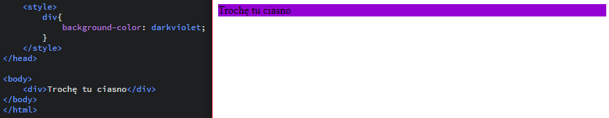
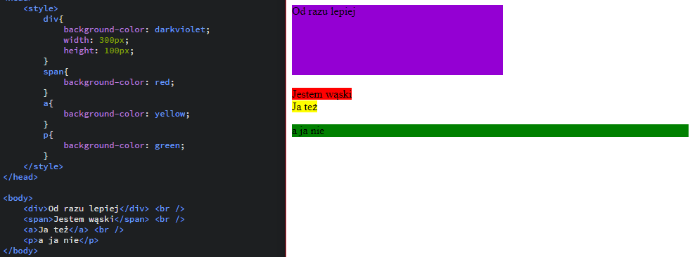
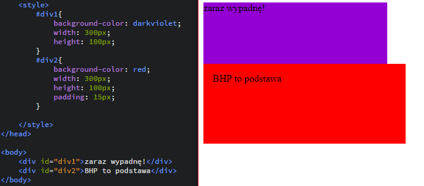
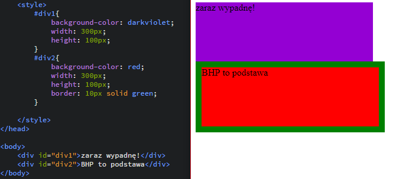
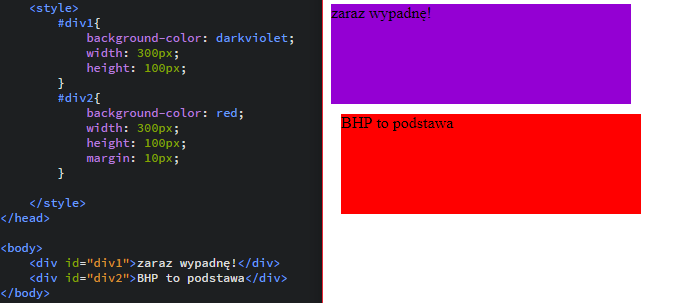
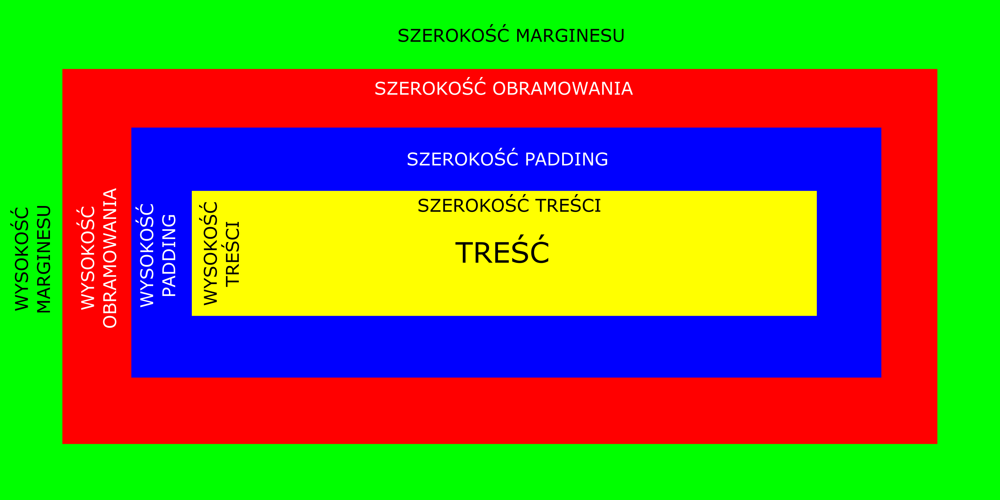

WARSZTATY WEBOWE Mikołaj Szumigalski
Powrót
Zajęcia 8
Link do pobrania prezentacji z zajęć nr 8: Prezentacja 8
Obszar jaki zajmuje element
Ustalamy sobie, że nasz div ma wymiary width: 200px i height: 300px. Ale oprócz tego ustawiamy mu border: 2px i może jeszcze padding: 5px. Jakie wymiary ma teraz div?
1. Model pudełkowy
Aby lepiej zrozumieć samą ideę modelu pudełkowego (ang. box model) spróbujmy potraktować nasz potencjalny element(div, span, p czy jakikolwiek inny) jako prostokąt(pudełko) o konkretnych wymiarach. Teraz po kolei będziemy nadawać naszemu elementowi różne właściwości, które omówimy
{kind=link}
1.1 Warstwa treści
Wielkość tej warstwie nadają właściwości width i height, a w przypadku gdy ich nie ustalamy wielkości te są nadawane automatycznie, bądź dopasowane są do treści tekstu znajdującego się wewnątrz znacznika
{kind=link}
Jak widzimy w przypadku nieustalonych wielkości elementy takie jak span czy a dopasowują się do wielkości treści. W przypadku znacznika p jest tak tylko w przypadku wysokości, a długość automatycznie jest maksymalna. Wynika to z tego, że pierwsz dwa elementy są liniowe a element p jest blokowym (o elementach blokowych i liniowych mówiliśmy na zajęciach numer 4).
1.2 Warstwa między treścią, a brzegiem elementu, czyli padding
O właściwości padding mówiliśmy przy tabelach. Tam pojawiła się właściwość cellpadding, która ustalała nam odległości między wartością komórki, a brzegiem. Pamiętajmy, że ustawiając padding: 10px zarówno szerokość naszego elementu wzrośnie o 20px, jak i jego wysokość
{kind=link}
Jak widzimy drugi element jest zdecydowanie wyższy i szerszy
1.3 Obramowanie (border)
O obramowaniu mówiliśmy już sporo. Tutaj niespodzinki też ne będzie. Element, który otrzyma border: 15px będzie szerszy o 30px, oraz wyższy o tą samą wartość.
{kind=link}
Oczywiście nie ma najmnijeszych przeciwwskazań, aby używać na tym samym obiekcie zarówno padding jak i border.
1.4 Margin(es)
Ostatnią wartością, która "powiększa" nasz element to margines. Jest to odstęp między naszym elementem a innym elementem. W przypadku tabel uzyskiwaliśmy to za pomocą cellspacing. Margines nie jest widoczny, traktujemy go jako przerwę, jednak pamiętajmy, że tak naprawdę jest nierozerwalnie związany z nszym elementem i musimy pamiętać o tym w momencie gdy planujemy ustalić wymiary naszej strony.
{kind=link}
Jak widzimy element numer 2 jest "odsunięty" zarówno od div'a u góry, jak i od lewej ściany dokumentu.
2. Liczenie całkowitej szerokości i wysokości elementu
Jak widać nie jest to specjalnie skomlikowane, jednak trzeba pamiętać, że każda w włściwości dodaje trochę pikseli zarówno z góry, z dułu z lewej i z prawej.